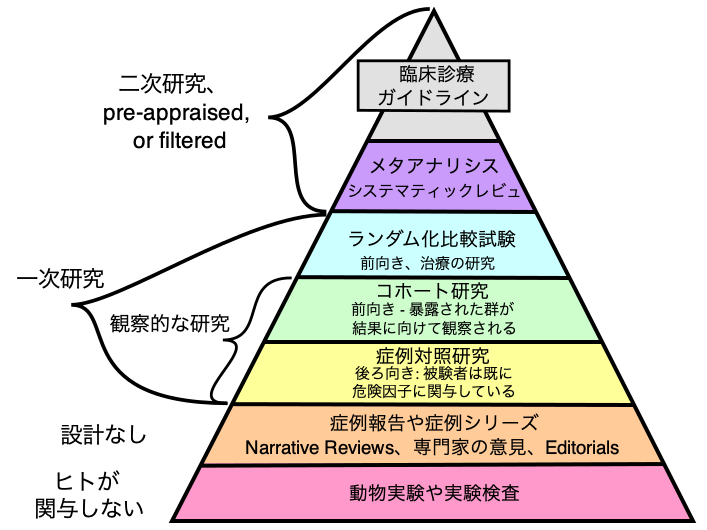

1 臨床論文
1.1 論文の構成
論文は形式が自由だと言われることもありますが、一方で非常に形式的であると言われることもあります。どちらが本当でしょうか？一般に、臨床論文は形式が決まっていることが多いです。さらに、研究デザインやジャーナルによる特有の形式もあります。
出版形式としては、従来の紙ベースおよびこれを PDF 化したものから、近年ではウェブで直接読むことも可能になってきています。
一般には、論文は「タイトル (title)」「著者 (author)」「抄録 (abstract)」「キーワード (key word)」から始まり、「本文 (full text)」が続きます。本文以外は無料で閲覧でき、本文は有料ということもあります。
抄録は、英語では abstracrt です。「抄録」よりも abstract という表現の方が良く使われているので、abstract とします。abstract には、「構造化されている abstract」(structured abstract) と「構造化されていない abstract」(unstructrued abstract) があるます。構造化されているとは、見出しがつき、段落わけされていることです。
本文は、通常、IMRaD 形式に従います。これは、Introduction、Methods、Results and Discussion の頭文字をとったものです。すべての臨床論文が IMRaD 形式というわけではありません。単に名称が異なるだけのこともあります。例えば以前の JAMA は、Discussion ではなく Comment としていました。
さらに、これらに加えて「資金提供者 (Funding)」「謝辞 (Acknowledgement)」「引用 (References)」などが加わります。近年では、ウェブ上に「追加情報 (Supporting Information)」としてダウンロード可能な Word/Excel ファイル、データ、解析に用いたソースコード、査読などがあることもあります。
1.2 論文の英文法
1.2.1 時制
英語の時制は、日本語より複雑な点と、日本語と異なる使い方をすることがあるため、苦手としている人が多いようです。また、臨床論文を読む際は、英語の時制でニュアンスが変わることがあります。
現在形: used to refer to recently published work indicating that it is still valid
現在完了: used to refer to a report published in the recent past that continues to have importance
過去形1: used to refer to the methods and results of the study being described
過去形2: used to refer to an article published months or years ago that is not primarily of historical value(Style Committee et al. 2020, 432)
現在形は、科学的事実の場合に用いられます。臨床型論文も科学です。このため、先行研究の中で広く受け入れられているものは現在形で書かれています。
現在完了形は、過去のことと誤解されたり、あるいは訳す際の日本語としての滑らかさから過去形で訳すことがありますが、基本的には現在形の一種です。上記の説明のあるように、最近報告されてまだ科学的事実とまでいかないことは現在完了形で書かれることがあります。
過去形は、大きく分けて二つの使い方があります。一つ目の使い方は、著者らが実際に行った方法や結果の報告です。
もう一つの使い方は、先行研究で、それほど価値がないものに使われます。
つまり、Introduction や Discussion では、現在形は広く知られていること、現在完了形は最近わかったことで重要だと考えられること、過去形は反対意見などに使われることがあります。
なお、これは臨床系論文以外には当てはまりません。中山裕木子「理系の英語論文術」では、方法論では現在形と現在完了形、結果は過去形と現在完了形を使うと書かれています。実際、理工学系の論文ではそのように使われており、臨床系論文とは時制の使い方が異なります。
1.3 論文の探し方
1.3.1 学術誌
論文とは、大学などに提出されたものもありますが、学術誌に掲載されたものを指すことが多いでしょう。学術誌は、英語では Journal といいます。学術誌はの数は、2020年時点で 46,000 以上あると言われており、増え続けています。
学術誌については、有田 (2022) (有田正規 2022) が Journal of Medical English Education で報告をしています。ここでは、以下の 3 点に触れたいと思います。
- オープンアクセス (Open Access, OA) の登場
- 学術誌ランキングの登場
- 既存ジャーナルの OA 化
臨床系の学術誌はたくさんあります。その中でも、The Lancet、New England Journal of Medicine、Journal of American Medical Association (JAMA)、British Medical Journal (BMJ) は 4 大ジャーナルと言われています。
OA ジャーナルとは、インターネット上で誰でも無料で閲覧できる学術誌です。紙媒体では流通していません。有名どころでは、PLOS 系、BioMedCentral 系、Scientific Reports などがあります。
学術誌ランキングは、最も有名なのは Impact Factor (IF) です。これは、被引用数から計算されています。臨床系学術誌では、IF が 1.0 を超えていれば信頼できる学術誌とみなされています。
学術誌は、歴史あることが権威を伴ってきました。しかし、学術誌は高価であるため、OA の論文の方が引用される可能性が高くなります。こうなると、OA 雑誌の方が IF が高くなっていきます。そこで、既存の雑誌の中に、一部の論文をオープンアクセス化するのが出てきました。JAMA は Jama Network Open、BMJ は BMJ Open といったジャーナルも出しています。
1.3.2 検索データベース
論文を検索する場合は、論文が登録されている検索データベースを検索することが一般的です。
医療系では、英語ベースのものとしては以下のようなものがあります。
- MEDLINE: 臨床論文のデータベース。MEDLINE のウェブ版が PubMed。なお、日本語で検索できる PubMed CLOUD もある。
- EMBASE: 薬学論文のデータベース。
- CINAHL: 看護などの関連職種。
医療系ではなく、広く論文を検索する場合は、Google による Google Scholar があります。Google Scholar の特徴として、被引用件数の情報があります。Cited by … とあるところが被引用件数です。また、Google アカウントを持っていれば、検索して Save を押すと My Library に記録されます。Cite 機能を使えば、後述する文献管理アプリケーションに取り込むこともできます。
日本語論文を検索できるものに、以下のようなものがあります。
- CiNii
- 医中誌
- J-Stage
1.3.3 DOI
デジタルオブジェクト識別子 (Document Object Identifier, DOI) は、インターネット上にあるドキュメントの ID です。
通常、インターネット上のドキュメントには URL があります。しかし、URL は変わることがあるため、 ID としては不適切です。国際 DOI 財団が ID を管理していています。
論文の引用文献などで DOI を付与することが増えてきています。実際、ジャーナルの投稿規程などでも推奨されています。PLOS ONE の投稿規定では、
Manuscripts on preprint servers, providing the manuscript has a citable DOI or arXiv URL.と書かれています。
1.3.4 文献の管理
文献を読んだら、文献管理アプリケーションで管理しておきましょう。
アプリに PDF ファイルをリンクさせることで、すぐに開くことができます。メモも可能です。
Word などで引用文献を書く場合には、自動的に形式を整えたり整列してくれるなどの機能があります。
Mendeley や Zotero の場合、データはクラウド上で管理され、他の人と共有することもできます。
- EndNote (有料)
- Mendeley (無料)
- Zotero (無料)
- BibDesk (無料) macOS のみ
- RefWorks (杏林大学図書館、有料)
1.3.5 検索の実際
フレイル (frailty) の論文として重要なものは何があるでしょうか？
上述の検索データベースで、frailty を検索してみましょう。
PubMed (左) と Google Scholar による検索
PubMed: 執筆時点では、27,790 件の論文がヒットしました。Review 論文が上位に来ています。
Google Scholar: 執筆時点では、約 800,000 件の論文がヒットしました。４つ目の論文は、Clegg A et al (2013) Frailty in elderly people. The Lancet, 381(9868), 752-762. で、Cited by 7802 と、多くの引用がされています。
このように、データベースによって検索結果の件数や並び方が異なります。
1.4 研究コミュニティ
1.4.1 ORCID
ORCID (Open Researcher and Contributor ID, オーキッドとも読む) は、研究者の ID です。
研究者は、論文を書くことで業績となります。その際に、論文と研究者を紐づけるのは氏名です。このため、結婚など何らかの理由で名前が変わっても、研究上は同じ名前を使い続けることも多いようです。
しかしながら、現代では同姓同名の人も多くなっており、氏名だけで識別することは困難です。そこで登場したのが ORCID です。ORCID を登録しておくことで、確実に識別ができるようになります。論文にも、ORCID が付与されているケースが徐々に増えてきています。
研究上の氏名は、必ずしも戸籍上の名前などである必要はありません。ペンネームを使ったことで有名な人に、統計学の Student がいます。Student の本名は William Gosset ですが、当時勤務していたギネス社が社員が論文を出すことを禁止していたため、ペンネームを用いました。
日本人で名前を工夫している方に、京都大学の古川教授がいます。この方は、英語表記は Toshi A. Furukawa としています。
ORCID は、ID だけでなく、業績を管理するのに役立ちます。これは、査読についても適用されるようになっています。従来、査読は公表されることはないため、完全に匿名のボランティアでした。しかし、査読時に ORCID を登録することで、どの論文に対して査読したかは分からなくとも、ジャーナルごとに査読した回数がわかるようになってきています。ただし、すべてのジャーナルが対応しているわけではありません。
日本では、研究者データベースとして ResearchMap があります。ResearchMap にも ORCID を入力する欄がありますので、データをリンクすることができます。
1.4.2 研究の SNS
研究者向けのソーシャルネットワーキングサービスと言えるものがあります。代表的なものは、ResearchGate や Academia があります。
ResearchGate で、関心のある研究者をフォローすることで、論文出版時に連絡が来るようになります。
1.5 自動翻訳
多くのWebブラウザは、ウェブページの翻訳に対応しています。
iPad の場合、ウェブブラウザにアドオンを追加できないですが、Safari はネイティブで自動翻訳機能を備えています。
1.6 研究デザイン
臨床系論文は、研究デザインによってある程度書き方が決まっています。

観察的研究を研究デザインとするのはどれか。２つ選べ。
コホート研究
メタアナリシス
無作為比較対照研究
ケースコントロール研究
システマティックレビュー
ケースコントロール研究は、図中の症例対照研究です。正解は 1 と 4 となります。
1.7 頻出キーワード
ここでは、第 2 章から第 8 章まで共通して使われる専門用語について概略します。
アウトカムとは、転帰とも言います。当該研究において、最も重要視する評価項目です。エンドポイントとも同じような意味で使われることがあります。
95% Confidence Interval (95 % CI):「95% 信頼区間」で、同じ調査を繰り返し行っても、95% はこの範囲に収まる範囲を示しています。定義せずに 95 % CI と表記されることもあります。
信頼区間とは、これまでよく使われてきた p 値に変わって使われています。
… Although hypothesis testing often results in the P value, P values themselves can only provide information about whether the null hypothesis is rejected. Confidence intervals are much more informative because they provide a plausible range og values for an unknonwn parameter, as well as some indication of the power of the study as indicated by the width of the CI. … (Manual of Style 11th Edition p. 1069)
研究の強み (strength) と限界 (limitation) は、臨床研究では必須で、考察の後半で記述されます。
資金提供、スポンサー、研究組織とのかかわり、起こり得る利益相反 (conflict of interest) は、論文の後半において引用文献のまえに書かれています。これは、ヘルシンキ宣言に基づくものです。